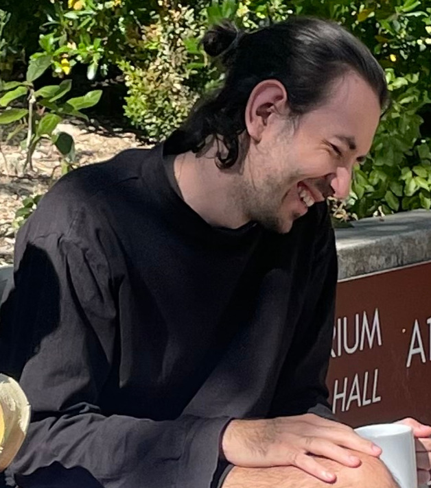

| Damien SIMON PhD student Mathematics, Bât. 307 Université Paris-Sud 91405 Orsay Cedex - France Email adress : damien.simon(at)universite-paris-saclay.fr Office : 3R15 |  |
I am interested in the representation theory of vertex algebras and the related algebraic geometry. More specifically, at the moment, I want to understand some aspects of the quantum geometric Langlands program. Here is my cv.